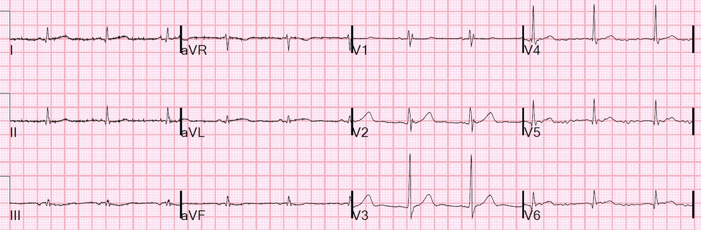
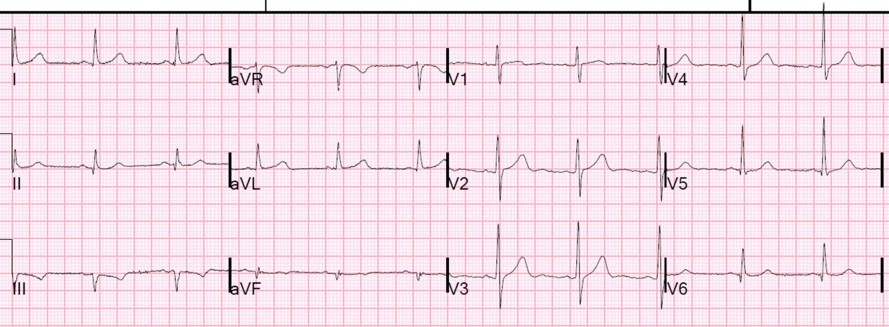
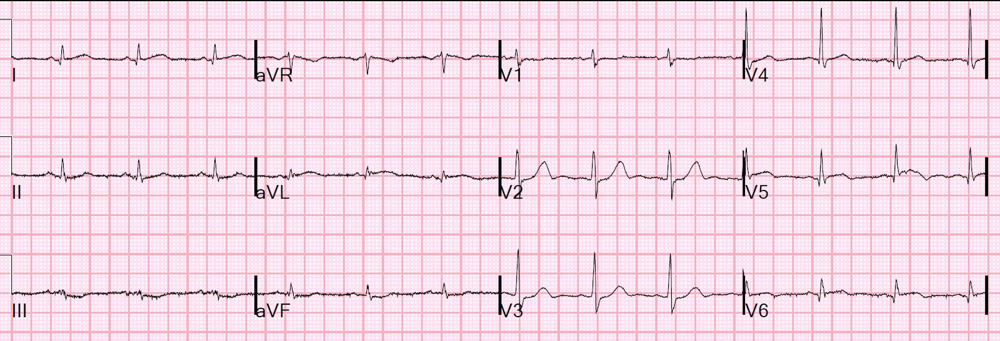
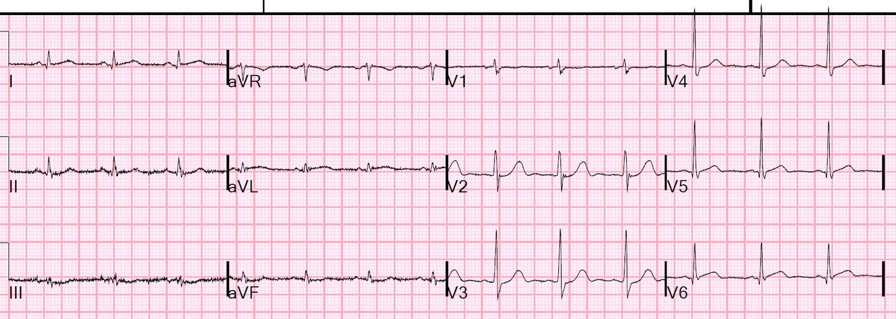
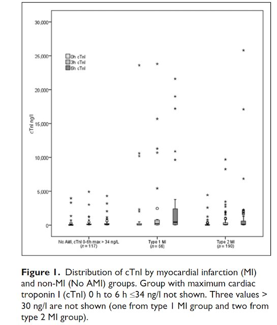
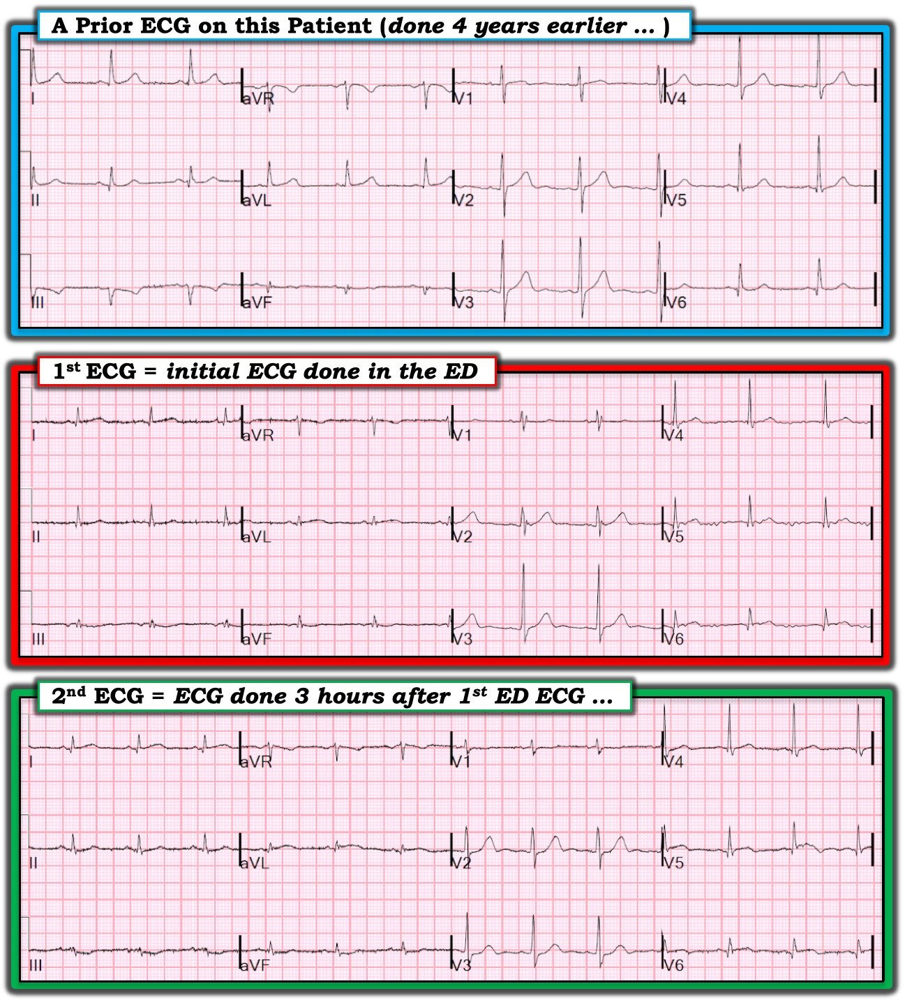

05/02/2019 — Troponin có nên là một dấu hiệu sinh tồn? Có lẽ có, nhưng chỉ khi được diễn giải dựa trên xác suất tiền nghiệm.
Bản dịch tiếng Việt của bài "Should Troponin be a Vital Sign? Perhaps, but only if Interpreted Using Pre-test Probability." – Dr. Smith’s ECG Blog. Giữ nguyên toàn bộ 8 hình ảnh của bản gốc.
Một bệnh nhân 80 mấy tuổi, không nói tiếng Anh, than phiền chóng mặt (vertigo). Bệnh nhân được hỏi nhiều lần về đau ngực hay khó thở, nhưng lần nào cũng phủ nhận có bất kỳ triệu chứng nào như vậy.
Các dấu hiệu sinh tồn đều bình thường. Khám lâm sàng bình thường.
Bệnh nhân được ghi điện tâm đồ lúc phân loại (triage) ở thời điểm 0 (điện tâm đồ-1):


Nhịp xoang. Có thể chậm dẫn truyền thất phải. Bạn nghĩ gì?
Khi xem bản ghi này mà không có thông tin nào khác, tôi đã nói rằng nó rất đáng nghi nhồi máu cơ tim thành bên cao. Ở aVL có một QRS rất nhỏ với ST chênh lên (STE) 0,5 mm, và có ST chênh xuống soi gương ở các chuyển đạo thành dưới. Nếu bạn thấy hình ảnh này, bạn phải hỏi bệnh nhân thật kỹ về bất kỳ triệu chứng nào ở ngực, và ngay cả khi không có triệu chứng liên quan, phải chắc chắn tìm điện tâm đồ cũ, và làm các điện tâm đồ liên tiếp cùng troponin.
Thực ra có một điện tâm đồ cũ từ khoảng 4 năm trước (điện tâm đồ-2), mà tôi không chắc là đã có ai xem:


Điều này có nghĩa là ST-T trên điện tâm đồ-1 không tương xứng với QRS
Các bác sĩ lâm sàng đã không nhận ra dấu hiệu trên điện tâm đồ-1.
Về sau các bác sĩ lâm sàng cho biết họ hoàn toàn không nghi ngờ ACS, nhưng bác sĩ hướng dẫn vẫn muốn làm troponin. Vì vậy troponin đã được chỉ định, và kết quả trả về vào một lúc nào đó trong vài giờ sau (không rõ chính xác khi nào họ xem được kết quả):
Troponin I = 27,0 ng/mL (gấp 900 lần giới hạn trên của bình thường)
(rất đại khái tương đương troponin I độ nhạy cao 27.000 ng/L)
Điện tâm đồ thứ 2 được ghi lúc 3 giờ (điện tâm đồ-3):


STE ở aVL và STD ở III và aVF rõ hơn, và giờ có STD ở V2 và V3. Điều này giúp chẩn đoán xác định OMI sau-bên (nhất là khi có kết quả troponin!).
Điện tâm đồ thứ 3 được ghi lúc 3,5 giờ (điện tâm đồ-4):


Trong hồ sơ bệnh án có ghi:
“Troponin tăng lên 27. Bệnh nhân phủ nhận đau ngực khi hỏi các triệu chứng lúc đầu. Nay xác nhận có đau ngực bắt đầu từ 30 phút trước. Khi hỏi thêm, bệnh nhân cho biết đã đau ngực từng cơn từ hôm qua. Đau tăng khi nằm thẳng và giảm khi ngồi dậy. Đã cho 324 mg aspirin. Điện tâm đồ ghi lại cho thấy ST chênh lên vừa phải ở I và aVL và chênh xuống ở các chuyển đạo thành dưới.”
Phòng thông tim đã được kích hoạt.
Chụp mạch vành:
LM: hẹp 30% lỗ xuất phát.
LAD: hẹp 80% đoạn giữa
LCx tắc đoạn giữa (tổn thương gây nhồi máu cấp)
RCA: hẹp 80% đoạn giữa. Stent đoạn xa thông tốt.
PCI LCx đoạn giữa
Như vậy đây là một OMI (nhồi máu cơ tim do tắc), nhưng không phải STEMI
Siêu âm tim:
Giảm chức năng tâm thu thất trái, mức độ nhẹ/vừa.
Phân suất tống máu thất trái ước tính nằm trong khoảng
35–40%.
Rối loạn vận động thành khu trú (WMA):
WMA khu trú: Thành dưới-đáy (đây là một tên gọi khác của thành sau), vô động, nhỏ.
WMA khu trú: Thành bên, rộng, giảm động.
Bệnh nhân rơi vào sốc tim và cuối cùng tử vong do cơn nhồi máu cơ tim này.
Bàn luận
Có nhiều người, đặc biệt là các bác sĩ tim mạch, cho rằng bác sĩ cấp cứu chỉ định troponin quá nhiều. Nhiều kết quả trả về “dương tính” và kéo theo nhiều xét nghiệm tiếp theo thường không cần thiết. Trong nghiên cứu UTROPIA của chúng tôi (NCT02060760), từ đó đã có nhiều công bố, 85% các troponin “dương tính” (ít nhất một giá trị trên giới hạn trên tham chiếu (URL) ở bách phân vị thứ 99, là nhồi máu cơ tim típ II hoặc tổn thương cơ tim không phải nhồi máu (tổn thương cơ tim cấp hoặc mạn).
Sandoval Y và cs. Type 1 and 2 Myocardial Infarction and Myocardial Injury: Clinical Transition to High-Sensitivity Cardiac Troponin I. Tạp chí American Journal of Medicine 130(12): 1431-1439, tháng Mười Hai năm 2017.
Quan trọng: điều này không phải do troponin độ nhạy cao; số troponin vượt URL 99% với troponin I độ nhạy cao còn thấp hơn so với troponin I thế hệ hiện hành (contemporary).
Chúng tôi đã công bố một nghiên cứu khác (xem bên dưới) cho thấy, đúng như dự đoán, việc chọn bệnh nhân ảnh hưởng rất lớn đến giá trị tiên đoán dương của troponin.
Ý kiến của tôi về vấn đề này:
Không hẳn là chúng ta chỉ định troponin quá nhiều. Tuy nhiên, chúng ta dùng ngưỡng bách phân vị thứ 99 làm điểm cắt để chẩn đoán nhồi máu cơ tim típ I, và quá thường xuyên gán chẩn đoán nhồi máu cơ tim típ I chỉ vì có một giá trị troponin trên URL đó. Chính việc diễn giải xét nghiệm mới thường không phù hợp, chứ không hẳn là việc chỉ định xét nghiệm. Chỉ trong đúng bối cảnh lâm sàng thì một giá trị troponin tăng nhẹ mới rất đáng nghi nhồi máu cơ tim típ 1.
Tuy nhiên, bất kể bối cảnh lâm sàng thế nào, một giá trị troponin gấp 30, 100 hay 500 lần URL thực sự nhiều khả năng nhất là nhồi máu cơ tim típ I.
Hình này lấy từ nghiên cứu Diamond T (mọi nhồi máu cơ tim típ 1 đều là NSTEMI, không phải STEMI):


Xem 2 nghiên cứu dưới đây, mà tôi cũng là đồng tác giả. Với nghiên cứu thứ nhất, người ta có thể kết luận rằng không nên chỉ định troponin trừ khi xác suất tiền nghiệm nhồi máu cơ tim típ 1 rất cao.
Tôi sẽ diễn giải nghiên cứu này theo cách sau:
Khi xác suất tiền nghiệm thấp, thì troponin phải rất cao mới nghi ngờ nhồi máu cơ tim típ 1.
Khi xác suất tiền nghiệm rất cao, troponin không cần phải cao đến thế.
Tôi cũng tiếp cận điện tâm đồ theo cùng cách đó:
Nếu bệnh nhân có xác suất tiền nghiệm thấp và ST chênh lên hay sóng T không rõ ràng mang tính chẩn đoán, thì đừng kết luận là OMI khi chưa làm thêm xét nghiệm. Nếu biểu hiện nhồi máu cơ tim là điển hình, thì một ST-T rất gợi ý sẽ có xác suất hậu nghiệm cao hơn nhiều.
Những điểm cần học:
1. Chỉ định troponin cho bệnh nhân này là sáng suốt: bệnh nhân không nói tiếng Anh, rất cao tuổi và có nguy cơ nhồi máu cơ tim cao, dù lý do chính đến khám không gợi ý nhồi máu cơ tim. Nếu troponin trả về chỉ tăng nhẹ, thì nó sẽ không có giá trị chẩn đoán nhồi máu cơ tim típ 1. Nhưng nó trả về cao đến mức nhồi máu cơ tim típ I là chẩn đoán có khả năng cao hơn hẳn mọi chẩn đoán khác.
2. Dĩ nhiên, nhận ra được các dấu hiệu trên điện tâm đồ là lý tưởng nhất, nhưng điều này rất khó.
Tài liệu tham khảo
Nghiên cứu 1:
Shah A.
Sandoval Y. Noaman A. Sexter A.
Vaswani A. Smith SW. Gibbins M. Griffiths M.
Chapman AR. Strachan FE. Anand A.
Denvir MA. Adamson PE. D’Souza MS.
Gray AJ. McAllister DA. Newby DE.
Apple FS. Mills NL. Patient
selection for high-sensitivity cardiac troponin testing and the diagnosis of
myocardial infarction. Tạp chí BMJ
2017;359:j4788 doi: 10.1136/bmj.j4788 (Xuất bản ngày 07 tháng Mười Một năm 2017)
Liên kết toàn văn: https://www.bmj.com/content/359/bmj.j4788.full
Tóm tắt
Mục tiêu Đánh giá việc chọn bệnh nhân để làm xét nghiệm troponin tim độ nhạy cao ảnh hưởng thế nào đến chẩn đoán nhồi máu cơ tim ở các cơ sở y tế khác nhau.
Thiết kế Nghiên cứu tiến cứu trên ba quần thể bệnh nhân liên tiếp, độc lập, đến khoa cấp cứu.
Bối cảnh nghiên cứu Các bệnh viện tuyến hai và tuyến ba ở Vương quốc Anh và Hoa Kỳ.
Đối tượng Nồng độ troponin I tim độ nhạy cao được đo ở 8500 bệnh nhân liên tiếp đến khoa cấp cứu: các bệnh nhân không chọn lọc ở Vương quốc Anh (n=1054) và hai quần thể bệnh nhân có chọn lọc, trong đó xét nghiệm troponin do bác sĩ điều trị yêu cầu, ở Vương quốc Anh (n=5815) và Hoa Kỳ (n=1631). Chẩn đoán cuối cùng nhồi máu cơ tim típ 1 hoặc típ 2 hay tổn thương cơ tim được thẩm định độc lập.
Tiêu chí đánh giá chính Giá trị tiên đoán dương của nồng độ troponin tim tăng đối với chẩn đoán nhồi máu cơ tim típ 1.
Kết quả Nồng độ troponin tim tăng ở 13,7% (144/1054) bệnh nhân không chọn lọc, với tỷ lệ hiện mắc nhồi máu cơ tim típ 1 là 1,6% (17/1054) và giá trị tiên đoán dương là 11,8% (KTC 95% 7,0% đến 18,2%). Ở các bệnh nhân có chọn lọc, trong đó xét nghiệm troponin do bác sĩ điều trị định hướng, tỷ lệ hiện mắc và giá trị tiên đoán dương là 14,5% (843/5815) và 59,7% (57,0% đến 62,2%) ở Vương quốc Anh, và 4,2% (68/1631) và 16,4% (13,0% đến 20,3%) ở Hoa Kỳ. Ở cả hai quần thể bệnh nhân có chọn lọc, giá trị tiên đoán dương cao nhất ở những bệnh nhân có đau ngực, có thiếu máu cục bộ trên điện tâm đồ và có tiền sử bệnh tim thiếu máu cục bộ.
Kết luận Khi xét nghiệm troponin tim độ nhạy cao được làm rộng rãi hoặc không có đánh giá lâm sàng trước, nồng độ troponin tăng là thường gặp và chủ yếu phản ánh tổn thương cơ tim hơn là nhồi máu cơ tim. Những nhận xét này làm nổi bật việc chọn bệnh nhân để xét nghiệm troponin tim khác nhau thế nào giữa các cơ sở y tế và ảnh hưởng rõ rệt đến giá trị tiên đoán dương đối với chẩn đoán nhồi máu cơ tim.
Nghiên cứu 2:
Trong nghiên cứu này, với 5% số ca nhồi máu cơ tim típ I, bác sĩ tim mạch cho rằng chỉ định troponin là không phù hợp. Như vậy, 5% số ca nhồi máu cơ tim sẽ bị bỏ sót nếu làm theo “lệnh cấm chỉ định quá nhiều troponin” này.
Sandoval Y, Gunsolus IL, Smith SW, Sexter A, Thordsen SE, Carlson MD, Johnson BK, Bruen CA, Dodd KW, Driver BE, Jacoby K, Love SA, Moore JC, Scott NL, Schulz K, Apple FS. Appropriateness of Cardiac Troponin Testing: Insights from the Use of TROPonin In Acute coronary syndromes (UTROPIA) Study. Tạp chí Am J Med [Internet]. 2019;132:869–874. Truy cập tại: http://dx.doi.org/10.1016/j.amjmed.2019.01.043
Tóm tắt
Mục tiêu
Mục tiêu của chúng tôi là khảo sát mức độ phù hợp của việc làm xét nghiệm troponin tim (cTn) ở những bệnh nhân có cTn tăng.
Phương pháp
Đây là một phân tích thứ cấp có kế hoạch từ nghiên cứu đoàn hệ quan sát Use of TROPonin In Acute coronary syndromes (UTROPIA, NCT02060760). Mức độ phù hợp của xét nghiệm cTn được thẩm định ở các bệnh nhân khoa cấp cứu có cTn tăng > bách phân vị thứ 99 và được phân tích bằng cả xét nghiệm cTnI thế hệ hiện hành lẫn độ nhạy cao (hs), theo chuyên khoa sâu, chẩn đoán và triệu chứng.
Kết quả
Mức độ phù hợp được xác định từ 1272 và 1078 phiếu thẩm định hoàn thành cho 497 và 422 bệnh nhân có tăng cTnI thế hệ hiện hành và hs-cTnI, theo thứ tự. Mức độ phù hợp của xét nghiệm cTnI tính trên các phiếu thẩm định là 71,5% và 72,0% với cTnI và hs-cTnI, theo thứ tự. So với bác sĩ cấp cứu, các bác sĩ tim mạch ít có xu hướng xếp chỉ định cTnI là phù hợp hơn (cTnI: 79% so với 56%, P < .0001; hs-cTnI: 82% so với 51%, P < .0001). Với cTnI thế hệ hiện hành, mức độ phù hợp 95%, 70% và 39% được ghi nhận trên các phiếu thẩm định do bác sĩ tim mạch hoàn thành đối với nhồi máu cơ tim típ 1, nhồi máu cơ tim típ 2 và tổn thương cơ tim, theo thứ tự; so với 90%, 86% và 71%, theo thứ tự, ở bác sĩ cấp cứu. Kết quả tương tự cũng được ghi nhận khi dùng hs-cTnI. Bất đồng trong các phiếu thẩm định mức độ phù hợp xảy ra thường gặp nhất ở các ca tổn thương cơ tim (62% với cả hai xét nghiệm) hoặc nhồi máu cơ tim típ 2 (cTnI 31%; hs-cTnI 23%).
Kết luận
Có khác biệt rõ rệt giữa bác sĩ tim mạch và bác sĩ cấp cứu trong nhận thức về thế nào là sử dụng xét nghiệm cTn phù hợp trên lâm sàng, trong đó bác sĩ cấp cứu có xu hướng coi xét nghiệm là phù hợp trong nhiều tình huống lâm sàng hơn. Bất đồng thường xuất phát nhất từ các ca được xếp loại là tổn thương cơ tim hoặc nhồi máu cơ tim típ 2.

–———————————————————-
Bình luận của KEN GRAUER, MD (5/2/2019):
———————————————————–
Một ca bệnh xuất sắc của Dr. Smith — vừa nhấn mạnh các khái niệm lâm sàng quan trọng về cách dùng troponin tối ưu ở khoa cấp cứu — vừa — nêu ra nhiều chi tiết tinh tế sâu sắc trong việc diễn giải các bản ghi liên tiếp, có so sánh với một bản ghi cũ của bệnh nhân. Tôi tập trung bình luận vào những chi tiết tinh tế này trên điện tâm đồ.
- Để rõ ràng — tôi đã ghép trong Hình 1 2 điện tâm đồ đầu tiên ghi ở khoa cấp cứu, cùng với bản ghi cũ của bệnh nhân này.


==========================
Biểu hiện lâm sàng của ca này đặc biệt khó = một bệnh nhân cao tuổi, không nói tiếng Anh, lúc đầu phủ nhận mọi dấu hiệu dù nhỏ nhất của đau ngực. Điện tâm đồ cũ ( = bản ghi TRÊN CÙNG trong Hình 1) không có sẵn vào lúc bệnh nhân được khám lần đầu — vì vậy đánh giá ban đầu chỉ dựa vào Điện tâm đồ thứ 1 = bản ghi Ở GIỮA trong Hình 1. Suy nghĩ của tôi về điện tâm đồ ban đầu này ghi ở khoa cấp cứu như sau:
- Như Dr. Smith đã nêu — có một phức bộ QRS rất nhỏ ở chuyển đạo aVL, với hình ảnh có vẻ là ST chênh lên dạng vòm (coving) 0,5 mm. Có một phức bộ QRS cũng nhỏ như vậy ở chuyển đạo III, với ST chênh xuống dạng lõm (scooped) tinh tế-nhưng-có-thật trông như “hình soi gương” của ST chênh lên tinh tế ở chuyển đạo aVL. Gợi ý thay đổi soi gương tương tự cũng thấy ở chuyển đạo aVF — nhưng không thấy ở chuyển đạo II. Dù tôi nghĩ những thay đổi này còn lâu mới mang tính quyết định — tôi đồng ý với điểm xuất sắc mà Dr. Smith nhấn mạnh = hình ảnh này rõ ràng có thể là OMI (nhồi máu cơ tim thành bên cao?), và ca này cần được chú ý ngay.
- Những suy nghĩ bổ sung về Điện tâm đồ thứ 1 này: Có hình RSr’ ở chuyển đạo V1 — với phức bộ QRS có thời gian bình thường. Câu hỏi đặt ra là liệu đây có phải blốc nhánh phải không hoàn toàn (IRBBB) không? Về mặt kỹ thuật thì không — vì không có sóng s tận ở các chuyển đạo bên I và V6. Tôi thường ghi nhận dấu hiệu này bằng cách chỉ đơn giản viết “RSr’ ở chuyển đạo V1”. Cần lưu ý — vùng chuyển tiếp sớm (sóng R nổi bật đã bắt đầu hình thành từ V2, và sóng R trở nên ưu thế từ chuyển đạo V3). Cần lưu ý — sóng T dương ở cả 6 chuyển đạo ngực. Thường thì với RBBB hoàn toàn hoặc không hoàn toàn — có ST-T chênh xuống ở chuyển đạo V1, và đôi khi cả ở V2 và V3. Do chúng ta lo ngại có thể có OMI thành bên cao tinh tế — điều này đặt ra câu hỏi liệu sóng T dương ở chuyển đạo V1 và V2 của điện tâm đồ thứ 1 này có thể là bất thường và phản ánh thiếu máu cục bộ hay không. Tôi không chắc chắn về câu trả lời cho điều này khi chỉ đánh giá một bản ghi duy nhất này.
- Có các sóng q khởi đầu rất nhỏ ở nhiều chuyển đạo — gồm các chuyển đạo I, II, III, aVL, aVF và V4,5,6. Tôi nghĩ những sóng q nhỏ và hẹp thấy ở nhiều chuyển đạo này không có ý nghĩa.
==========================
Đã tìm được một Điện tâm đồ cũ (ghi 4 năm trước đó) = bản ghi TRÊN CÙNG trong Hình 1. Thật thú vị khi so sánh điện tâm đồ cũ này với điện tâm đồ ban đầu ghi ở khoa cấp cứu.
- Như Dr. Smith đã nêu — biên độ QRS ở các chuyển đạo chi lớn hơn trên bản ghi cũ. Ngoài ra — có sự dịch chuyển trục nhẹ (tức là, phức bộ QRS gần như âm hoàn toàn ở chuyển đạo III của bản ghi cũ — trong khi nó có vẻ đẳng điện ở điện tâm đồ thứ 1). Điều này có ý nghĩa — vì sóng T đảo ngược mà chúng ta thấy chỉ riêng ở chuyển đạo III trên bản ghi cũ không nhất thiết là bất thường (tức là, sóng T đảo ngược có thể bình thường khi chỉ đơn độc ở chuyển đạo III hoặc aVF nếu phức bộ QRS ở cùng chuyển đạo đó chủ yếu là âm).
- Chúng ta không thấy bất kỳ dấu hiệu nào của ST dạng vòm hay ST chênh lên ở chuyển đạo aVL trên điện tâm đồ cũ. Dù vậy, do đã có sự dịch chuyển trục, với hình thái QRS ở aVL nay đã khác, tôi không chắc về ý nghĩa (nếu có) của thay đổi này.
- Trên bản ghi cũ thấy một sóng R đơn pha, có biên độ bằng sóng S mảnh ở chuyển đạo V1. Không có dấu hiệu nào của hình RSr’ thấy ở điện tâm đồ thứ 1. Vùng chuyển tiếp trên bản ghi cũ cũng sớm (R=S từ V2, với sóng R ưu thế từ V3). Cần lưu ý — sóng T cũng dương ở cả 6 chuyển đạo ngực trên bản ghi cũ này — vì vậy sóng T dương ở cả 6 chuyển đạo ngực không phải là dấu hiệu mới.
- ĐIỀU CỐT LÕI — Tôi không nghĩ bản ghi cũ làm sáng tỏ được tình huống. Chúng ta vẫn còn băn khoăn về những thay đổi đã nêu ở trên trên điện tâm đồ ban đầu.
==========================
Mục đích chính khi tôi bình luận ca này xuất phát từ Điện tâm đồ thứ 2 = bản ghi DƯỚI CÙNG trong Hình 1. Khi đánh giá bằng cách so sánh điện tâm đồ thứ 2 này với điện tâm đồ thứ 1 — giờ đây đã có thể đưa ra chẩn đoán xác định OMI!
- Trong 3 giờ trôi qua kể từ khi ghi điện tâm đồ thứ 1 — nay rõ ràng có ST chênh lên dạng vòm nhiều hơn ở chuyển đạo aVL — và — ST chênh xuống soi gương nhiều hơn (thay đổi soi gương) ở chuyển đạo III và aVF. Ngoài ra, chuyển đạo thành dưới thứ 3 ( = chuyển đạo II) nay cho thấy gợi ý ST chênh xuống soi gương.
- Ở các chuyển đạo ngực phía trước, kể từ khi ghi điện tâm đồ thứ 1 — nay có ST chênh xuống tại điểm J ở chuyển đạo V2 và V3 mà trước đó không có.
- Ở các chuyển đạo ngực phía bên — nay dường như có ST chênh lên nhẹ-nhưng-có-thật, với sóng T bắt đầu đảo ngược ở chuyển đạo V5 và V6. Dù phải thừa nhận là khó đánh giá vì nhiễu đường nền ở chuyển đạo V5 và V6 trên cả hai bản ghi — tôi thực sự nghĩ rằng ST chênh lên mới xuất hiện ở các chuyển đạo này là có thật.
- ĐIỀU CỐT LÕI — Ngay cả khi không có troponin tăng rất cao trong ca này — các thay đổi điện tâm đồ tuần tự đã mô tả ở trên, xuất hiện trong khoảng thời gian giữa lúc ghi điện tâm đồ thứ 1 và thứ 2 (cách nhau 3 giờ), có giá trị chẩn đoán OMI sau-bên cấp.
==========================
ĐỀ XUẤT — Các dấu hiệu điện tâm đồ và các thay đổi điện tâm đồ tuần tự được mô tả trên 3 bản ghi trong Hình 1 là rất tinh tế! Dù vậy, chúng hoàn toàn phù hợp với bệnh sử lâm sàng và kết quả thông tim. Rất đáng xem lại một lần nữa nếu bạn đã không tự tin chẩn đoán OMI cấp sau khi xem điện tâm đồ thứ 2, và so sánh nó với điện tâm đồ thứ 1 ghi trước đó 3 giờ.
==========================
T.B. (P.S.) — Theo Arron Pearce, thay vì nhịp xoang, ở Điện tâm đồ thứ 1 (bản ghi Ở GIỮA trong Hình 1) — nhiều khả năng là một Nhịp nhĩ thấp (Low Atrial Rhythm), vì không có sóng P dương rõ ở chuyển đạo II — sóng P có vẻ âm ở chuyển đạo III và aVF — và sóng P dương ở chuyển đạo I và aVL. Lưu ý nhịp xoang trở lại như thế nào ở Điện tâm đồ thứ 2 ghi 3 giờ sau đó (sóng P nay dương ở chuyển đạo II, cũng như ở các chuyển đạo thành dưới khác)
- Việc không có dải nhịp chuyển đạo II dài, nhiễu đường nền và hoạt động nhĩ có biên độ rất thấp đều góp phần làm cho việc đánh giá nhịp trên điện tâm đồ thứ 1 khá khó khăn. Dù vậy — rõ ràng dường như có một nhịp nhĩ thấp.
- Về mặt lâm sàng — ý nghĩa lâm sàng của một nhịp nhĩ thấp thoáng qua, không gia tốc là rất nhỏ.
==========================
- Chúng tôi xin CẢM ƠN Dr. Smith một lần nữa vì đã trình bày ca bệnh này.